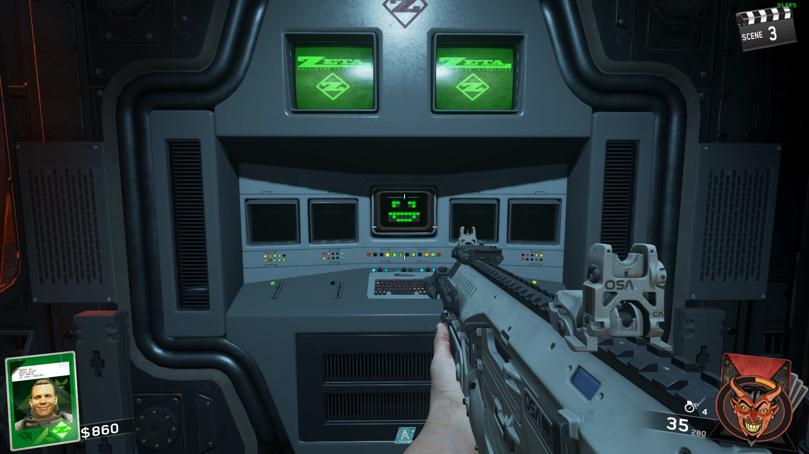

Pick up N31L's Head and Place it in the Terminal in Spawn

Containment Chamber
Lead a Zombie under the Containment Chamber and Activate it to Trap the Zombie for 5 Minutes
Pack a Punch
Find 3 Large Metal Sheets in the following Locations and place them on the Broken Bridge

Entangler
Throw a Grenade at the Box Hanging on a Wall, then Shoot the Skull

Stand on the X in Cargo Hold (1 per Player)

Quickly find the Skull somewhere in the Room and Jump into it
Obtain the Entangler from the Center of the Room


Venom-X
Spawn a Phantom by Teleporting to and From the PaP Room
Shock the Phantom with the Electric Trap in the Water Room
A Button Panel will open in the Main Room
Either Trial and Error with the Buttons and Have to Kill Phantom that Spawns and Flip the Round, or use Sneekee's Tool to find the Correct Button
Complete a Maze on 4 Different Terminals
You can either follow the Image Below or use Sneekee's Maze Tool
A Metal Door will open in the Center of the Main Area with the Venom-X

Venom-Y Upgrade
Go to the Terminal Upstairs by Bang Bangs and Activate it to start the Morse Code
Input the Morse Code Number in the Upstairs Room of the Main Area (Left is Dot, Right is Dash)

Follow the Morse Code Guide in Sneekee's Morse Code Tool
Complete the Challenge given from the Morse Code (You can see your Progress in the Bottom Right of the Scoreboard)
Once your Challenge is Complete, you can PaP the Venom-X
Venom-Z Upgrade
Obtain the Entangler, then Complete the Next Morse Code Step the Same Way
Once your Challenge Progress is 50%, go to the Terminal in the Snow Area and Change the Date to 1950
Hidden Figures will Spawn, take them neer the PaP Portal and Kill the Number given from your Morse Code


Once your Challenge is Complete, you can PaP the Venom-Y
Main Quest
Floppy Disks
Obtain the Entangler, go to the Red Vent straight out of Cargo under the Stairs to the Left
Fire the Entangler at the Floppy Disk on the Ground and shoot it into the vent at the back of the Room
The Disk will come out of one of the 3 Vents nearby

The next Floppy Disk is in the Snow by a Pillar near the PaP Portal
Enter the Projection Room, Kill the Phantom that spawns when you Exit, the Floppy Disk will drop on the Ground where the Phantom Died

Pick up the Astronaut Helmet wiht the Entangler in Spawn, take it to the Forcefield in Medbay and Shoot it into the Green Monitor behind the Forcefield
The Floppy Disk will be on the Counter
There are Symbols in various Locations of the Map, one of them will show the Symbols on your 4 Floppy Disks, once you find the one with your 4 Symbols, Place your Floppy Disks into N31L in that order from Top to Bottom
For example my Code was on the Blue Paper in the Break Room


N31L Security Clearance
Go to the Brute Cardboard Cutout in the Theater and use the Entangler to grab the Red Button on the Wall behind him and put it into one of the Beast From Beyond Posters

Go to the Medbay and Press the Button on the underside of the Desk that had the Floppy Disk on it

A Panel will Open in the other Medbay Room with the Cryptid on the Table, Take Note of which Levers are Vertical to start with, and flip just those
Each Lever will turn other ones around the board, if flipping just the ones that were Vertical to start with didn't make all of them Align, then Take Note of which Levers are Horizontal and FLip Just Those
Repeat this until they all Align

Once you Align the Levers a Timer will start, run to N31L, use the Entangler to grab his Head, take hime to the PaP Room and Place him in the Computer as fast as Possible
If you fail, a Nuke will go off, then you have to wait a bit, Press the Red Button and complete the Lever Puzzle Again
**PREPARE FOR THE BOSS FIGHT**
Interact with N31L to start the Boss Fight
Kill all 4 Rhinos that come out of the Crates
Crytids will spawn, Kill them and Activate all 3 Terminals around the Outside of the Room as fast as Possible
A 100 Second Countdown will start with a ton of Cryptids, Phantoms, and Rhinos spawning, just run around and Survive (You don't have to kill them)
Once 100 Seconds have Passed, interact with the Terminal in the Center of the Room
Phantom Rhinos that have a Ton of Health will Spawn, Kill them and the Cutscene will Play